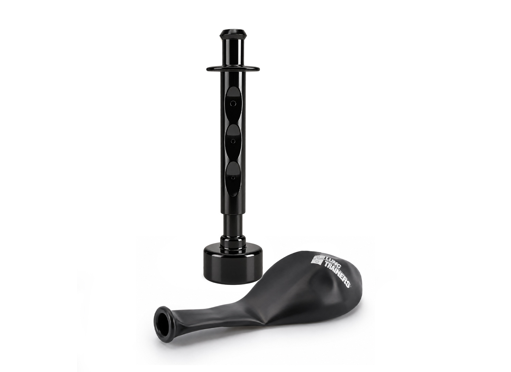
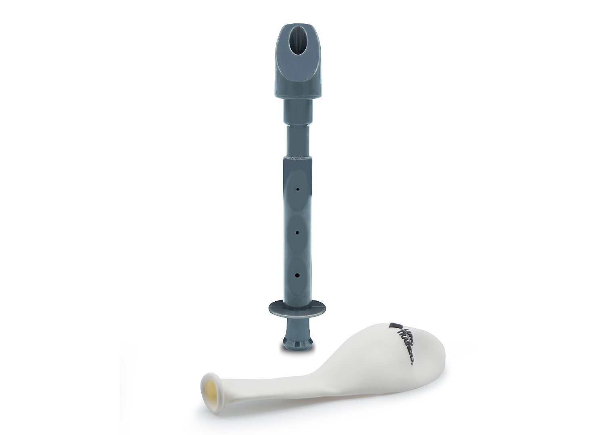
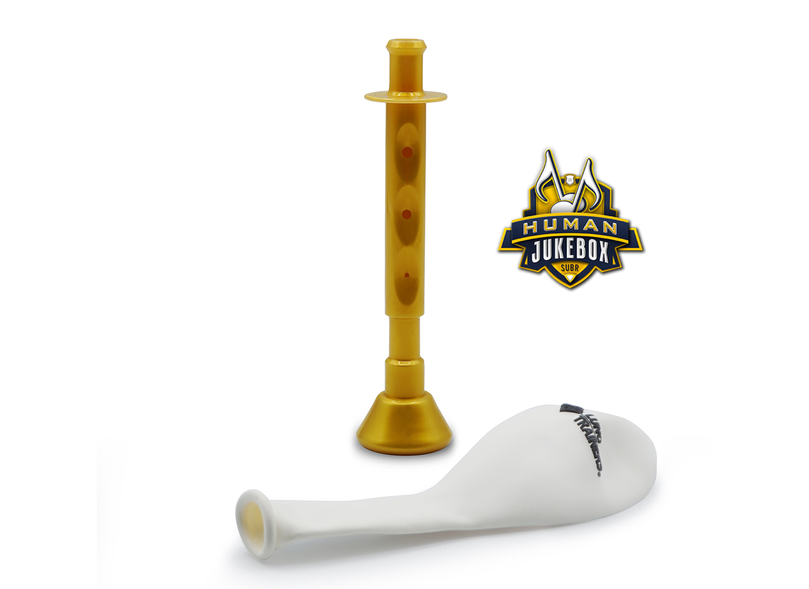

Presión visible
El fabricante describe un globo calibrado alrededor de media libra por pulgada cuadrada. Inflarlo crea una meta fácil de observar.
Ruta 02 · Venta directa y distribución masiva
La línea IBA (asistente individual para respiración) convierte el flujo de aire en una experiencia visible, portátil y fácil de demostrar. Su precio abre una rama comercial distinta: adquisición directa, educación digital, compras por volumen y reposición.
Esta ruta usa la investigación médica como contexto de valor. No propone prestar tratamientos ni administrar seguros médicos.


Producto comprensible
Todos los modelos individuales comparten una lógica: boquilla, regulador de flujo y un globo que ofrece una referencia visual y física. Las variaciones cambian la boquilla y la cantidad de aire liberada.
El fabricante describe un globo calibrado alrededor de media libra por pulgada cuadrada. Inflarlo crea una meta fácil de observar.
Los orificios permiten liberar más aire. La resistencia del globo permanece como referencia mientras cambia la demanda de flujo.
El formato cabe en la mano, se monta en segundos y puede demostrarse en casa, en una consulta, en una clase o en un evento.

Activo diferenciador: la respiración deja de ser invisible. El usuario y quien lo orienta reciben una señal inmediata sin depender de una pantalla.
Ver demostración oficial de la línea ↗La ventaja comercial
La economía publicada permite probar mensajes, canales y audiencias con mucha menos fricción que los equipos institucionales.
Los modelos individuales observados se ofrecen dentro de este rango. Es una entrada de compra directa y de baja consideración.
La compra puede convertirse de inmediato en una experiencia demostrable, sin requerir accesorios adicionales para comenzar.
La reposición crea una relación posterior a la primera compra y permite construir paquetes, recordatorios y venta recurrente.
Investigación que orienta, no que exagera
Una población que muestra la dimensión del problema respiratorio. No equivale al mercado disponible ni demuestra beneficio del producto individual.
CDC (Centros para el Control y la Prevención de Enfermedades) ↗Un estudio con otro dispositivo de entrenamiento respiratorio en adultos mayores mostró alta adherencia cuando existía educación inicial.
Ensayo aleatorizado, 2022 ↗Una revisión de 2026 destaca que mecanismo, costo, facilidad, supervisión y retroalimentación influyen en la respuesta al entrenamiento.
Revisión clínica, 2026 ↗Hipótesis comercial: adultos interesados en acondicionamiento respiratorio, cuidadores y profesionales que educan pueden ser audiencias de prueba. Las promesas médicas deben validarse antes de convertirlas en publicidad.
La precisión protege el crecimiento
Dato confirmado
El registro de la FDA (Administración de Alimentos y Medicamentos de Estados Unidos) describe uso con prescripción desde los 12 años, en clínica o domicilio.
Ver registro oficial ↗Punto que debe resolverse
La revisión realizada no localizó una autorización de la FDA (Administración de Alimentos y Medicamentos de Estados Unidos) que identifique por nombre a los modelos individuales.
Lo aprendido de los videos actuales
Los materiales oficiales explican bien el gesto físico, pero casi todos empiezan desde músicos y atletas. El formato puede adaptarse a una audiencia de bienestar respiratorio sin inventar beneficios.
Distingue boquillas, flujo y modelos; muestra cómo montar el globo y cómo reconocer la acción correcta. Excelente material educativo, demasiado largo para adquisición.
Ver video ↗Una creadora sostiene el modelo IBA-S+ (asistente individual para respiración) y muestra el globo. La estructura funciona para publicidad corta: producto, gesto y resultado visible.
Ver video ↗El relato de un policía retirado conecta con dificultad respiratoria, pero mezcla equipos institucionales y el dispositivo individual. Las dos ramas deben separarse.
Ver video ↗Estrategia sugerida
DESCUBRIR
Videos breves que convierten un problema invisible en una acción fácil de entender.
ELEGIR
Una pregunta de uso y una recomendación de modelo, sin obligar al comprador a descifrar la nomenclatura.
ACTIVAR
Montaje, higiene, rutina sugerida y límites de uso explicados con lenguaje visual.
REPETIR
Globos, paquetes familiares, compra por volumen y códigos para profesionales.
Primeros 90 días
Matriz regulatoria, arquitectura de modelos, fotografías, demostraciones y materiales de inicio.
Dos o tres páginas de producto, paquetes, publicidad demostrativa y profesionales aliados.
Optimizar costo de adquisición de cliente, conversión, valor promedio del pedido, reposición y devoluciones.